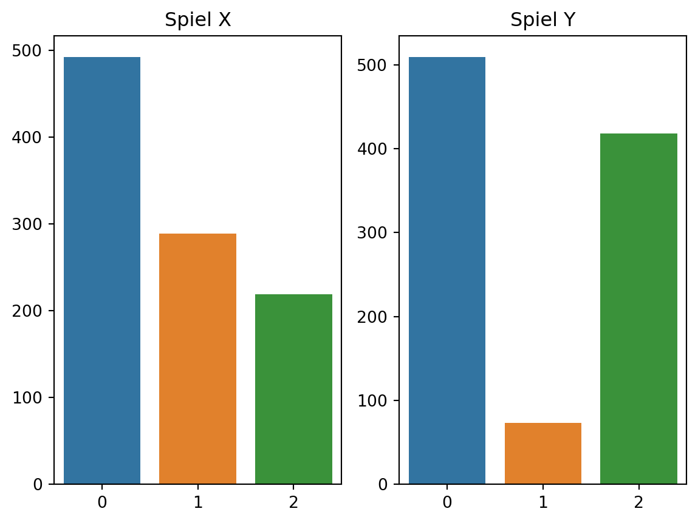
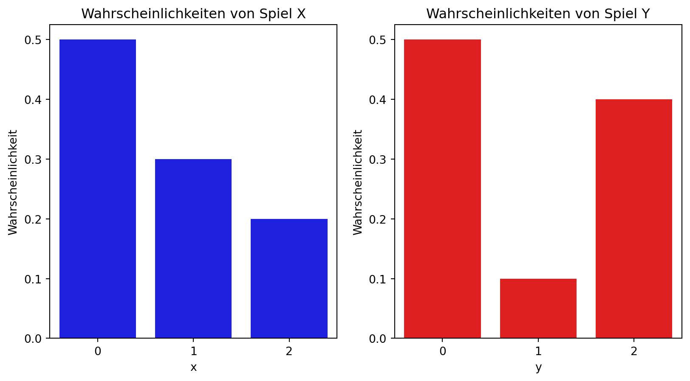

np.random.seed(432)
# Wir spielen 1000 Mal das Spiel X
x = np.random.choice([0, 1, 2], size=1000, p = [0.5, 0.3, 0.2])
x.shape(1000,)Wir schauen uns zwei Spiele an. Im Spiel X können wir nichts (0 EUR), 1 EUR oder 2 EUR gewinnen. Im Spiel Y können wir nichts (0 EUR), 3 EUR oder 4 EUR gewinnen. Jedes Mal, das wir eins der Spiele spielen, wird ein Ergebnis eintreten (wir erhalten 0, 1, oder 2 EUR). Es ist wichtig zu beachten, dass wir das Ergebnis des Spieles vor dem eigentlichen Spielen nicht kennen.
Im Folgenden werden wir die Spiele X und Y mittels Zufallszahlen simulieren.
np.random.seed(432)
# Wir spielen 1000 Mal das Spiel X
x = np.random.choice([0, 1, 2], size=1000, p = [0.5, 0.3, 0.2])
x.shape(1000,)np.random.seed(434)
# Wir Spielen 1000 Mal das Spiel Y und speichern die Ergebnisse
# in y
y = np.random.choice([0, 1, 2], size=1000, p=[0.5, 0.1, 0.4])
y.shape(1000,)# Nun lasst uns die Spielergebnisse zählen
x_freqs = np.unique(x, return_counts=True)
x_freqs(array([0, 1, 2]), array([492, 289, 219]))y_freqs = np.unique(y, return_counts=True)
y_freqs(array([0, 1, 2]), array([509, 73, 418]))fig, (ax1, ax2) = plt.subplots(nrows=1, ncols=2)
sns.barplot(x=x_freqs[0], y = x_freqs[1], ax=ax1)
sns.barplot(x=y_freqs[0], y=y_freqs[1], ax=ax2)
ax1.set_title('Spiel X')
ax2.set_title('Spiel Y')Text(0.5, 1.0, 'Spiel Y')
games = pd.DataFrame({
'x': [0, 1, 2],
"p_x": [0.5, 0.3, 0.2],
'y': [0, 1, 2],
"p_y": [0.5, 0.1, 0.4]
})
games| x | p_x | y | p_y | |
|---|---|---|---|---|
| 0 | 0 | 0.5 | 0 | 0.5 |
| 1 | 1 | 0.3 | 1 | 0.1 |
| 2 | 2 | 0.2 | 2 | 0.4 |
Wir können die Wahrscheinlichkeiten der Gewinne in beiden Spielen in einem Balkendiagramm darstellen. Vergleichen Sie die Ergebnisse aus den Simulationen mit then Wahrscheinlichkeiten.
fig, ax = plt.subplots(nrows=1, ncols=2, figsize=(10, 5))
sns.barplot(data=games, x="x", y="p_x", color='blue', ax = ax[0])
ax[0].set_title('Wahrscheinlichkeiten von Spiel X')
ax[0].set_xlabel('x')
ax[0].set_ylabel('Wahrscheinlichkeit')
sns.barplot(data=games, x="y", y="p_y", color='red', ax = ax[1])
ax[1].set_title('Wahrscheinlichkeiten von Spiel Y')
ax[1].set_xlabel('y')
ax[1].set_ylabel('Wahrscheinlichkeit')Text(0, 0.5, 'Wahrscheinlichkeit')
Die Wahrscheinlichkeiten in der Tabelle oben beschreiben die Regeln der beiden Spiele. Aus Ihnen können wir zwar schwer vorhersagen, was das Ergebnis im nächsten Spiel sein wird, allerdings können wir eine große Anzahl von Spielen beschreiben.
Die Funktion, die jedes Ergebnis einer Zahl zwischen 0 und 1 zuordnet nennen wir eine Warhscheinlichkeitsfunktion. Die Tabelle oben können wir als Wahrscheinlichkeitsfunktionen für die Spiele X und Y schreiben.
p_X(x) = \begin{cases} 0.5 & \text{für } x = 0 \\ 0.3 & \text{für } x = 1 \\ 0.2 & \text{für } x = 2 \\ \end{cases}
p_Y(x) = \begin{cases} 0.5 & \text{für } x = 0 \\ 0.1 & \text{für } x = 3 \\ 0.4 & \text{für } x = 4 \\ \end{cases}
Die Wahrscheinlichkeitsfunktionen müssen die folgenden Bedingungen erfüllen:
\sum_{i=1}^n p(x_i) = 1
Sehr häufig möchten wir diese Funktionen zusammenfassen. Zum Beispiel, aus Sicht des Spielveranstalters müssen wir entscheiden, welchen Preis für ein Spielticket zu setzen. Um das machen zu können müssen wir wissen wie viel wir im Durchschnitt zahlen werden müssen, falls wir eine große Anzahl von Tickets verkaufen.
In der Simulation oben haben wir gesehen, daß im Spiel X die Wahrscheinlichkeiten (0.5, 0.3, 0.2) bedeuten, daß aus 1000 Spielen ungefähr 500 Tickets keinen Gewinn bringen. Für ungefähr 300 Tickets werden wir 1 EUR zahlen müssen und für ungefähr 200 Tickets werden wir 2 EUR zahlen müssen.
Insgesamt werden wir ungefähr
500 \times 0 + 300 \times 1 + 200 \times 2 = 700
Euro zahlen müssen. Wenn wir die Gesamtzahlung durch die Anzahl der verkauften Tickets dividieren, erhalten wir die durchschnittliche Zahlung pro Ticket, die wir leisten müssen.
\frac{700}{1000} = 0.7
Diese Zahl ist der Erwartungswert des Spieles X. Anders geschrieben:
\begin{align*} \frac{500 \times 0 + 300 \times 1 + 200 \times 2}{1000} = \\ 0 \times \frac{500}{1000} + 1 \times \frac{300}{1000} + 2 \times \frac{200}{1000} = \\ 0 \times 0.5 + 1 \times 0.3 + 2 \times 0.2 = \\ \end{align*}
Definition A.1 (Erwartungswert) Formal ist der Erwartungswert die gewichtete Summe der möglichen Ergebnisse. Für eine Zufallsvariable X mit den möglichen Ergebnissen x_1, x_2, \ldots, x_n und den Wahrscheinlichkeiten p_1, p_2, \ldots, p_n ist der Erwartungswert
E(X) = x_1 \cdot p_1 + x_2 \cdot p_2 + \ldots + x_n \cdot p_n = \sum_{i=1}^n x_i \cdot p_i
# Der Erwartungswert von X
E_X = np.sum(games["x"] * games["p_x"])
E_X0.7E_Y = np.sum(games["y"] * games["p_y"])
E_Y0.9Vergleichen wir diese Erwartungswerte mit den beobachteten Mittelwerten in den Simulationen
np.mean(x)0.727np.mean(y)0.909Der Erwartungswert ist ein linearer Operator. Das bedeutet, daß der Erwartungswert einer Summe von Zufallsvariablen gleich der Summe der Erwartungswerte ist.
Theorem A.1 Es seien X und Y zwei Zufallsvariablen und a und b zwei Konstanten (reale Zahlen). Dann gilt
E(aX + bY) = aE(X) + bE(Y)
Für den Beweis verwenden wir die Definition des Erwartungswertes und die Tatsache, daß die Konstante a aus der Summe herausgezogen werden kann (sie hängt nicht von dem Index der Summe ab).
\begin{align*} E(aX) = \sum_{i=1}^n a x_i p_i = a \sum_{i=1}^n x_i p_i = aE(X) \\ \end{align*}
Für den zweiten Teil des Beweises brauchen wir die gemeinsame Wahrscheinlichkeitsfunktion (p_{X,Y}) von X und Y, die in Kapitel A.5 eingeführt wird. Sie können den Beweis zuerst überspringen und später zurückkehren.
\begin{align*} E(X + Y) = \sum_{x}\sum_{y} (x + y) p_{X,Y}(x, y) = \sum_{x}\sum_{y} (x p_{X,Y}(x, y) + y p_{X,Y}(x, y)) \end{align*}
Wir können die Summe in zwei Teile aufteilen.
\begin{align*} E(X + Y) = \sum_{x}\sum_{y} x p_{X,Y}(x, y) + \sum_{x}\sum_{y} y p_{X,Y}(x, y) \end{align*}
Nun sollten wir merken, dass es in beiden Summen Komponenten gibt, die wir ausklammern können.
\begin{align*} E(X + Y) = \sum_{x} x \sum_{y} p_{X,Y}(x, y) + \sum_{y} y \sum_{x} p_{X,Y}(x, y) \end{align*}
Die Ausdrücke
\begin{align*} \sum_{y} p_{X,Y}(x, y) = p_X(x) \\ \sum_{x} p_{X,Y}(x, y) = p_Y(y) \end{align*}
sind die Randverteilungen von X und Y. Sie sind in Definition A.3 eingeführt. Wir können sie in den Ausdrücken oben ersetzen.
Am Ende erhalten wir
\begin{align*} E(X + Y) = \sum_{x} x p_X(x) + \sum_{y} y p_Y(y) = E(X) + E(Y) \end{align*}
Die Varianz ist ein Maß für die Streuung von Werten. Wir haben in der deskriptiven Statistik die empirische Varianz kennengelernt. Die empirische Varianz ist ein Maß für die Streuung von Werten um den Mittelwert. Die Varianz einer Verteilung (Zufallsvariable) ist ein Maß für die Streuung der Werte, die diese Verteilung produzieren wird (wenn wir das Spiel spielen).
Definition A.2 (Varianz) Die Varianz einer Zufallsvariable X mit den möglichen Ergebnissen x_1, x_2, \ldots, x_n und den Wahrscheinlichkeiten p_1, p_2, \ldots, p_n ist
\text{Var}(X) = E\left((X - E(X))^2\right) = \sum_{i=1}^n (x_i - E(X))^2 \cdot p_i
# Lasst uns die Varianz von X berechnen
# Den Erwartungswert von X haben wir bereits berechnet und unter E_X gespeichert
# Für die Varianz von X berechnen wir Differenz der möglichen Ergebnisse von X
# zum Erwartungswert
x_diff_erwartungswert = games["x"] - E_X
# Danach quadrieren wir die Differenzen
x_diff_erwartungswert_squared = x_diff_erwartungswert ** 2
# Am ende multiplizieren wir die quadrierten Differenzen mit den Wahrscheinlichkeiten für X=0, X=1 und X=2
var_X = np.sum(x_diff_erwartungswert_squared * games["p_x"])
var_X0.6100000000000001# Das gleiche können wir für Y machen, diesmal ohne die Zwischenschritte
var_Y = np.sum(games["p_y"] * (games["y"] - E_Y) ** 2)
var_Y0.8900000000000001Die Varianz von Y ist größer als die Varianz von X. Das bedeutet, daß die Werte, die Y produziert, weiter von ihrem Erwartungswert entfernt sein werden als die Werte, die X produziert.
Sehr häufig ist der folgende Satz nützlich
Theorem A.2 (Varianzzerlegung) Die Varianz einer Zufallsvariable X kann in zwei Teile zerlegt werden:
\text{Var}(X) = E(X^2) - (E(X))^2
Beweis. Der Beweis ist einfach. Wir beginnen mit der Definition der Varianz, danach schreiben wir die quadratische Formel um und benutzen die Linearität (Theorem A.1) des Erwartungswertes.
\begin{align*} \text{Var}(X) & = E\left((X - E(X))^2\right) \\ & = E(X^2 - 2X \cdot E(X) + (E(X))^2) \\ & = E(X^2) - 2E(X) \cdot E(X) + (E(X))^2 \\ & = E(X^2) - (E(X))^2 \end{align*}
Bisher haben wir uns nur mit einer Zufallsvariablen beschäftigt. Stellen wir uns vor, daß wir ein Spiel spielen, das zwei Ergebnisse produziert. Zum Beispiel können wir zwei Münzen werfen. Die Ergebnisse können sein: (Kopf, Kopf), (Kopf, Zahl), (Zahl, Kopf), (Zahl, Zahl). Oder aber wir spielen die Spiele X und Y und die Ergebnisse können sein (0, 0), (0, 3), (0, 4), (1, 0), (1, 3), (1, 4), (2, 0), (2, 3), (2, 4). Genau wir im ein-dimensionalen Fall können wir die Wahrscheinlichkeiten der Ergebnisse in einer Tabelle zusammenfassen.
Um ein Beispiel zu geben, werden wir Wahrscheinlichkeiten für dieses Spiel ausdenken.
import itertools
np.random.seed(322)
# Wir erzeugen 9 Zufallszahlen
joint_probs = np.random.rand(9)
games2 = pd.DataFrame(itertools.product([0, 1, 2], [0, 1, 2]), columns=["x", "y"])
# Damit diese Zufallszahlen die Bedingungen einer Wahrscheinlichkeitsverteilung erfüllen,
# müssen sie normiert werden, damit sie sich zu 1 summieren
games2["p_xy"] = joint_probs / joint_probs.sum()
games2| x | y | p_xy | |
|---|---|---|---|
| 0 | 0 | 0 | 0.198694 |
| 1 | 0 | 1 | 0.068238 |
| 2 | 0 | 2 | 0.132942 |
| 3 | 1 | 0 | 0.080278 |
| 4 | 1 | 1 | 0.008387 |
| 5 | 1 | 2 | 0.278337 |
| 6 | 2 | 0 | 0.095935 |
| 7 | 2 | 1 | 0.051734 |
| 8 | 2 | 2 | 0.085454 |
In diesem Spiel ist das wahrscheinlichste Ergebnis (1, 2) mit einer Wahrscheinlichkeit von 0.278.
Sehr häufig werden Sie diese Art von Tabelle in der Statistik sehen. Sie wird als gemeinsame Verteilung bezeichnet und wird oft in Tabellen dargestellt, wo die Werte des ersten Ergebnißes in den Zeilen und die Werte des zweiten Ergebnisses in den Spalten stehen. In den Zellen der Tabelle stehen die Wahrscheinlichkeiten.
games2_wide = games2.pivot(index="x", columns="y", values="p_xy")
games2_wide| y | 0 | 1 | 2 |
|---|---|---|---|
| x | |||
| 0 | 0.198694 | 0.068238 | 0.132942 |
| 1 | 0.080278 | 0.008387 | 0.278337 |
| 2 | 0.095935 | 0.051734 | 0.085454 |
Diese Ansicht is nützlich, denn sie erlaubt uns die Randverteilungen einfach (per Hand) zu berechnen. Die Randverteilungen sind die Verteilungen der einzelnen Zufallsvariablen. In unserem Beispiel sind die Randverteilungen die Verteilungen von X und Y.
Die Randverteilung beantwortet die Frage: “Was ist die Wahrscheinlichkeit, daß das erste Ergebnis 1 ist?” oder “Was ist die Wahrscheinlichkeit, daß das zweite Ergebnis 2 ist?”, usw.
In der Tabelle oben kann X = 1 in drei verschiedenen Fällen eintreten: (1, 0), (1, 1), und (1, 2). Die Wahrscheinlichkeit, daß X = 1 ist, ist die Summe der Wahrscheinlichkeiten dieser drei Fälle, denn die Ereignisse sind disjunkt.
Deswegen ist die Wahrscheinlichkeit, daß X = 0 ist, gleich 0.1986 + 0.0682 + 0.132942. Dieselbe Überlegung führ uns zu der Wahrscheinlichkeit, daß X = 1 ist: 0.080278 + 0.008387 + 0.278337 und zu der Wahrscheinlichkeit, daß X = 2 ist: 0.095935 + 0.051734 + 0.085454.
Ganz allgemein ergibt sich die Randverteilung von X aus der gemeinsamen Verteilung, indem die Wahrscheinlichkeiten in den Zeilen addiert werden.
Wenn wir die Tabelle spaltenweise addieren, erhalten wir die Randverteilung von Y.
Definition A.3 (Randverteilungen) Betrachten wir ein gemeinsame Wahrscheinlichkeitsfunktion p_{X,Y}(x, y) für zwei Zufallsvariablen X und Y. Die Randverteilungen von X und Y sind
p_X(x) = \sum_{y} p_{X,Y}(x, y)
und
p_Y(y) = \sum_{x} p_{X,Y}(x, y)
In Python ist es einfacher, die lange Form der Tabelle zu nutzen
games2.groupby("x").sum() # Dir Randverteilung von X| y | p_xy | |
|---|---|---|
| x | ||
| 0 | 3 | 0.399875 |
| 1 | 3 | 0.367002 |
| 2 | 3 | 0.233123 |
games2.groupby("y").sum() # Die Randverteilung von Y| x | p_xy | |
|---|---|---|
| y | ||
| 0 | 3 | 0.374907 |
| 1 | 3 | 0.128359 |
| 2 | 3 | 0.496734 |
Bisher haben wir die gemeinsame Verteilung und die Randverteilungen betrachtet. Diese Verteilungen beantworten die Fragen:
Es gibt noch ein wichtiges Konzept, das wir betrachten müssen: die bedingte Verteilung. Stellen wir uns vor, dass wir die zwei Spiele nach einander spielen und das wir bereits das Ergebnis des ersten Spieles kennen. Lasst uns annehmen, dass wir vom ersten Spiel 1 EUR gewonnen haben. Was ist die Wahrscheinlichkeit, dass wir im zweiten Spiel 3 EUR gewinnen werden?
Falls das erste Ergebnis 1 ist, dann sind die möglichen Ergebnisse des zweiten Spieles (1, 0), (1, 1), und (1, 2). Die restlichen Ergebnisse (0, 0), (0, 1), (0, 2), (2, 0), (2, 1), und (2, 2) sind nicht möglich.
Nach der gemeinsamen Verteilung sind die Wahrscheinlichkeiten dieser Ergebnisse sind 0.080278, 0.008387, und 0.278337. Diese Werte sind allerdings keine Wahrscheinlichkeitsverteilung (die Summe ist nicht 1). Wir müssen die Werte normieren, indem wir jeden Wert durch die Summe der Werte teilen.
Wir erhalten dadurch die bedingte Verteilung von Y gegeben X = 1. Diese Verteilung beantwortet die Frage: “Was ist die Wahrscheinlichkeit, daß das zweite Ergebnis y ist, gegeben daß das erste Ergebnis 1 ist?”
Wir können die bedingten Verteilungen von Y für jeden Wert von X berechnen. Wir müssen nur die gemeinsame Verteilung durch die Randverteilung von X teilen.
games2| x | y | p_xy | |
|---|---|---|---|
| 0 | 0 | 0 | 0.198694 |
| 1 | 0 | 1 | 0.068238 |
| 2 | 0 | 2 | 0.132942 |
| 3 | 1 | 0 | 0.080278 |
| 4 | 1 | 1 | 0.008387 |
| 5 | 1 | 2 | 0.278337 |
| 6 | 2 | 0 | 0.095935 |
| 7 | 2 | 1 | 0.051734 |
| 8 | 2 | 2 | 0.085454 |
games2["p_x"] = games2.groupby("x")["p_xy"].transform('sum') # Die Randverteilung von X
games2["p_y_given_x"] = games2["p_xy"] / games2["p_x"] # Die bedingte Wahrscheinlichkeit von Y gegeben X
games2| x | y | p_xy | p_x | p_y_given_x | |
|---|---|---|---|---|---|
| 0 | 0 | 0 | 0.198694 | 0.399875 | 0.496891 |
| 1 | 0 | 1 | 0.068238 | 0.399875 | 0.170649 |
| 2 | 0 | 2 | 0.132942 | 0.399875 | 0.332459 |
| 3 | 1 | 0 | 0.080278 | 0.367002 | 0.218740 |
| 4 | 1 | 1 | 0.008387 | 0.367002 | 0.022852 |
| 5 | 1 | 2 | 0.278337 | 0.367002 | 0.758408 |
| 6 | 2 | 0 | 0.095935 | 0.233123 | 0.411521 |
| 7 | 2 | 1 | 0.051734 | 0.233123 | 0.221916 |
| 8 | 2 | 2 | 0.085454 | 0.233123 | 0.366563 |
# Überprüfen wir, dass sich die bedingten Wahrscheinlichkeiten zu 1 summieren
games2.groupby("x")["p_y_given_x"].sum()x
0 1.0
1 1.0
2 1.0
Name: p_y_given_x, dtype: float64Definition B.1 (Unabhängigkeit) Zwei Zufallsvariablen X und Y nennen wir unabhängig, falls die gemeinsame Verteilung das Produkt der Randverteilungen ist.
p_{X,Y}(x, y) = p_X(x) \cdot p_Y(y)
Für unabhängige Zufallsvariablen gilt, daß die bedingten Verteilungen
Zwei Zufallsvariablen X und Y nennen wir unabhängig, wenn die bedingten Verteilungen von Y gleich der Randverteilung von Y sind (dasselbe gilt auch für X).
Theorem B.1 (Unabhängigkeit und bedingte Verteilungen) Unter Unabhängigkeit sind die bedingten Verteilungen von Y für jeden Wert von X gleich der Randverteilung von Y.
p_{Y|X}(y|x) = p_Y(y)
für alle x.
Beweis. Die Randverteilung von Y erhalten wir, indem wir die gemeinsame Verteilung über die möglichen Werte von X summieren.
p_Y(y) = \sum_{x} p_{X,Y}(x, y)
Die bedingte Verteilung von Y gegeben X erhalten wir, indem wir die gemeinsame Verteilung durch die Randverteilung von X teilen.
p_{Y|X}(y|x) = \frac{p_{X,Y}(x, y)}{p_X(x)}
Da sich laut Definition B.1 die gemeinsame Verteilung als Produkt der Randverteilungen schreiben lässt, erhalten wir
p_{Y|X}(y|x) = \frac{p_X(x)p_Y(y)}{p_X(x)} = p_Y(y)
# Hier konstruieren wir die gemeinsame Verteilung von den Randverteilungen der
# beiden Spiel X und Y
xy = list(itertools.product([0, 1, 2], [0, 1, 2]))
probs = list(itertools.product([0.5, 0.3, 0.2], [0.5, 0.1, 0.4]))
# Wir multiplizieren die Randverteilungen von X und Y um die gemeinsame Verteilung zu erhalten
joint_probs = [p_x * p_y for p_x, p_y in probs]
games_ind = pd.DataFrame(xy, columns=["x", "y"])
games_ind["p_xy"] = joint_probs
games_ind| x | y | p_xy | |
|---|---|---|---|
| 0 | 0 | 0 | 0.25 |
| 1 | 0 | 1 | 0.05 |
| 2 | 0 | 2 | 0.20 |
| 3 | 1 | 0 | 0.15 |
| 4 | 1 | 1 | 0.03 |
| 5 | 1 | 2 | 0.12 |
| 6 | 2 | 0 | 0.10 |
| 7 | 2 | 1 | 0.02 |
| 8 | 2 | 2 | 0.08 |
# Lasst uns die bedingten Verteilungen von Y gegeben X berechnen (für jedes x)
games_ind["p_y_given_x"] = games_ind["p_xy"] / games_ind.groupby("x")["p_xy"].transform('sum')
games_ind| x | y | p_xy | p_y_given_x | |
|---|---|---|---|---|
| 0 | 0 | 0 | 0.25 | 0.5 |
| 1 | 0 | 1 | 0.05 | 0.1 |
| 2 | 0 | 2 | 0.20 | 0.4 |
| 3 | 1 | 0 | 0.15 | 0.5 |
| 4 | 1 | 1 | 0.03 | 0.1 |
| 5 | 1 | 2 | 0.12 | 0.4 |
| 6 | 2 | 0 | 0.10 | 0.5 |
| 7 | 2 | 1 | 0.02 | 0.1 |
| 8 | 2 | 2 | 0.08 | 0.4 |
Was wir feststellen müssen ist es, daß die bedingten Verteilungen von Y gegeben X für jeden Wert von X gleich sind.
# Lasst und die Randverteilung von Y berechnen
p_y = games_ind.groupby("y")["p_xy"].sum()
p_yy
0 0.5
1 0.1
2 0.4
Name: p_xy, dtype: float64Bisher haben wir den Erwartungswert von Zufallsvariablen in Bezug auf ihre Randverteilungen berechnet. Wir können auch den Erwartungswert in Bezug auf die bedingte Verteilung berechnen. Diesen Erwartungswert nennen wir den bedingten Erwartungswert.
Definition B.2 (Bedingter Erwartungswert) Der bedingte Erwartungswert von Y gegeben X = x ist
E(Y|X = x) = \sum_{y} y \cdot p_{Y|X}(y|x)
Im Fall von unabhängigen Zufallsvariablen sind die bedingten Erwartungswerte gleich dem (unbedingten) Erwartungswert. Das ist eine direkte Folge aus der Tatsache, daß die bedingten Verteilungen gleich der Randverteilung sind.
# Als Beispiel berechnen wir die bedingten Erwartungswerten von Y gegeben X
# in den zwei Beispielen, die wir oben hatten
E_Y_given_X = games2.groupby("x").apply(lambda gr: np.sum(gr["y"] * gr["p_y_given_x"]))
E_Y_given_X/tmp/ipykernel_2446/2565904380.py:4: DeprecationWarning:
DataFrameGroupBy.apply operated on the grouping columns. This behavior is deprecated, and in a future version of pandas the grouping columns will be excluded from the operation. Either pass `include_groups=False` to exclude the groupings or explicitly select the grouping columns after groupby to silence this warning.
x
0 0.835568
1 1.539668
2 0.955041
dtype: float64Der bedingte Erwartungswert von Y ist bei X = 2 am größten und bei X = 0 am kleinsten. Das heißt, dass sich unsere Erwartungen über den Gewinn aus Spiel Y ändern, wenn wir das Ergebnis von Spiel X kennen.
# Im Fall der unabhängigen Zufallsvariablen X und Y in games_ind
E_Y_given_X_ind = games_ind.groupby("x").apply(lambda gr: np.sum(gr["y"] * gr["p_y_given_x"]))
E_Y_given_X_ind/tmp/ipykernel_2446/3047749272.py:3: DeprecationWarning:
DataFrameGroupBy.apply operated on the grouping columns. This behavior is deprecated, and in a future version of pandas the grouping columns will be excluded from the operation. Either pass `include_groups=False` to exclude the groupings or explicitly select the grouping columns after groupby to silence this warning.
x
0 0.9
1 0.9
2 0.9
dtype: float64Im Fall von unabhängigen Zufallsvariablen ist der bedingte Erwartungswert gleich dem (unbedingten) Erwartungswert. Das heißt, dass wir aus der Kenntnis des Ergebnisses von X keine zusätzliche Information über das Ergebnis von Y erhalten.
Wir haben bisher die Randverteilungen von Zufallsvariablen durch den Erwartungswert (Lage) und durch die Varianz (Streuung) zusammengefasst. Wir können auch die gemeinsame Verteilung von zwei Zufallsvariablen hinsichtlich des Zusammenhangs zwischen den beiden Variablen zusammenfassen.
Definition B.3 (Kovarianz) \text{Cov}(X, Y) = E_{XY}((X - E(X)) \cdot (Y - E(Y)))
Wir schreiben E_{XY}, um zu betonen, daß wir den Erwartungswert über die gemeinsame Verteilung berechnen.
Um die Kovarianz berechnen zu können ist oftmals der folgende Satz nützlich:
Theorem B.2 (Zerlegung der Varianz) \text{Cov}(X, Y) = E_{XY}(X \cdot Y) - E(X) \cdot E(Y) :::{.proof}
Der Satz ist sehr leicht zu beweisen. Wir müssen nur die Definition der Kovarianz und die Definition des Erwartungswertes benutzen.
\begin{align*} \text{Cov}(X, Y) & = E_{XY}((X - E(X)) \cdot (Y - E(Y))) \\ & = E_{XY}(X \cdot Y - X \cdot E(Y) - E(X) \cdot Y + E(X) \cdot E(Y)) \\ & = E_{XY}(X \cdot Y) - E_{XY}(X \cdot E(Y)) - E_{XY}(E(X) \cdot Y) + E_{XY}(E(X) \cdot E(Y)) \\ & = E_{XY}(X \cdot Y) - E(X) \cdot E(Y) \end{align*}
# Berechnen wir die Kovarianz für die zwei Spiele in games2
games2["xy"] = games2["x"] * games2["y"]
E_XY = np.sum(games2["xy"] * games2["p_xy"])
cov_XY = E_XY - E_X * E_Y
cov_XY0.38034575941137405# Berechnen wir die Kovarianz für die zwei Spiele in games_ind
games_ind["xy"] = games_ind["x"] * games_ind["y"]
E_XY_ind = np.sum(games_ind["xy"] * games_ind["p_xy"])
E_X_ind = np.sum(games["x"] * games["p_x"])
E_Y_ind = np.sum(games["y"] * games["p_y"])
cov_XY_ind = E_XY_ind - E_X_ind * E_Y_ind
cov_XY_ind1.1102230246251565e-16Was wir uns hier merken können ist es, dass die Kovarianz im Fall von unabhängigen Zufallsvariablen null ist. Die Umkehrung ist jedoch nicht wahr. Es ist durchaus möglich, daß zwei Variablen eine Kovarianz von null haben, die allerdings nicht unabhängig sind.
Theorem B.3 Es seien X und Y zwei unabhängige Zufallsvariablen. Dann ist ihre Kovarianz gleich null.
\text{Cov}(X, Y) = 0
Beweis. Wir starten mit der Zerlegung der Kovarianz aus Theorem B.2 und benutzen die Tatsache, daß die gemeinsame Verteilung das Produkt der Randverteilungen ist. Wir werden den Satz im diskreten Fall beweisen, allerdings gilt der Satz auch für stetige Verteilungen.
\begin{align*} \text{Cov}(X, Y) & = E_{XY}(X \cdot Y) - E_X(X) \cdot E_Y(Y) \end{align*}
Der Erwartungswert des Produktes von X und Y ist einfach die Summe aller möglichen Produkte der Werte von X und Y multipliziert mit den Wahrscheinlichkeiten, daß diese Werte eintreten. Wir werden die Tatsache benutzen, daß die gemeinsame Verteilung das Produkt der Randverteilungen ist.
p_{XY}(x, y) = p_X(x) \cdot p_Y(y)
\begin{align*} E_{XY}(X \cdot Y) & = \sum_{x} \sum_{y} x \cdot y \cdot p_{XY}(x, y) x \cdot y \\ & = \sum_{x} \sum_{y} x \cdot y \cdot p_X(x) \cdot p_Y(y) \\ & = \left(\sum_{x} x \cdot p_X(x) \right) \left(\sum_{y} y \cdot p_Y(y)\right) \\ & = E_X(X) \cdot E_Y(Y) \end{align*}